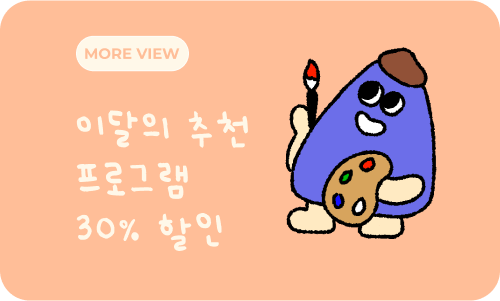
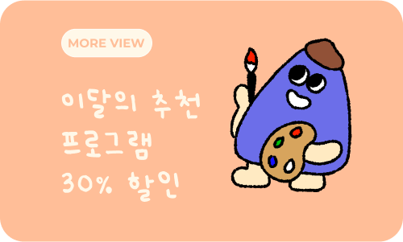

프로그램
프로그램
아무 것도 하지 않았다고 생각하는
하루도 글을 쓰다 보면 알게 됩니다.
의미없는 시간이 없다는 사실을,
내가 충분히 살아냈다는 사실을요.
음악을 듣고 그림을 그리는 것은
나의 있는 그대로의 감각을 느끼는 일이에요.
어린 시절의 누구의 눈치도 보지 않고
내 마음 가는 대로 즐겼던 그 순간을 떠올려 보세요.
바쁜 현대 사회를 사는 우리는 늘
과거를 후회하고, 미래를 걱정하지만
가장 중요한 건 현재 내가
무엇을 느끼는지 알아차리는 것이에요.
오늘의 드로잉을 올리면 다들 어떤 댓글을 달아주실까 기대하는 재미도 아주 쏠쏠했어요. 우리만의 광장 같았습니다. 그림 그리는 습관을 길러보고싶은 분들께 이 리추얼을 추천합니다.

회사에서는 당연히 말하기 어렵고, 친구에게도 대뜸 말하기 어려운 감정이나 생각.. 그냥 지나가면 잊혀지는 그런 것들을 한번 더 곱씹어볼 수 있어서 좋았어요! ㅎㅎ
혼자 하기 어려운 뭔가를 함께 하니 훨씬 이어가기가 수월했고, 꾸준함과 열정이 생겨 3주가 시간이 정말 빨리 흘러간 거 같아요^^ 한 번 도전해보세요! 추천합니다!!
다양한 봄나물에 대해 배울 수 있었고, 처음으로 냉이파스타를 만들게 되었는데 즐겁고 맛있는 시간이었습니다. 다양한 요리 정보에 이어 다른 분들의 요리를 보는 즐거움도 있는 시간이었어요.
 
